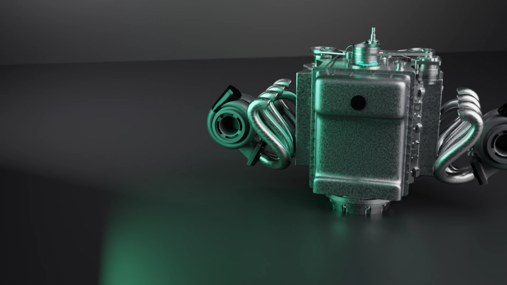

Desenvolvimento próprio
A equipe BDM desenvolve as soluções internamente e centraliza a engenharia dos arquivos.

Expansão BDM · Oficinas e profissionais automotivos
O modelo de Ponto de Apoio conecta sua atuação regional à engenharia própria, ao estoque virtual e ao suporte técnico da BDM.
Conhecimento que vem do chão de oficina.
A BDM Performance nasceu da estrutura do grupo Bombas Diesel Maringá, com mais de 30 anos de atuação.
O modelo Ponto de Apoio
Seu relacionamento regional se conecta ao desenvolvimento próprio, ao suporte e à estrutura da BDM.
A equipe BDM desenvolve as soluções internamente e centraliza a engenharia dos arquivos.
Conte com apoio próximo para dúvidas e necessidades técnicas que surgem durante a operação.
O Ponto de Apoio trabalha com estoque virtual e não exige taxa de franquia. O investimento é alinhado ao formato da operação.
Quer entender como o modelo se aplica à sua cidade?
Consultar minha regiãoNa prática
A BDM atua com reprogramação de centrais eletrônicas, chip de potência e soluções ligadas ao desempenho. O portfólio e os equipamentos disponíveis para cada parceiro são definidos na avaliação do formato.
Entender o portfólio da parceriaEXEMPLO DE OPERAÇÃO EM OFICINA
Veículo, aplicação e objetivo do cliente orientam o atendimento.
O parceiro trabalha com equipamentos e processos definidos com a BDM.
As programações são desenvolvidas e testadas pela equipe BDM, com suporte técnico ao parceiro.
Fluxo baseado no modelo de revenda descrito pela BDM. A configuração atual é apresentada na conversa.
Um processo consultivo
Conte onde você atua e como trabalha. A equipe BDM apresenta o formato, os requisitos e os próximos passos para o seu caso.
Conversar com a equipe BDMCidade, região e tipo de negócio ou atuação comercial.
Experiência no setor automotivo e estrutura atual da operação.
A equipe esclarece requisitos, investimento e próximos passos para a sua região.
Perfil de parceiro
Duas formas de levar a reprogramação BDM ao mercado automotivo da sua região.
Para negócios que querem ampliar o portfólio com reprogramação eletrônica e contar com engenharia na retaguarda.
Tenho uma oficinaPara profissionais com experiência comercial e relacionamento com oficinas e negócios automotivos na própria região.
Atuo na minha regiãoA base técnica da parceria
A BDM Performance nasceu da experiência e infraestrutura do grupo Bombas Diesel Maringá, com mais de 30 anos de atuação. Sua equipe desenvolve e testa programações para aplicações automotivas e de trabalho.
Conhecer a BDM PerformanceHistórias da rede BDM
Ouça profissionais que fizeram parte da rede de autorizados. Os relatos foram publicados pela própria BDM.
Depoimentos do programa de autorizados publicados na página oficial da BDM. O modelo Ponto de Apoio e suas condições atuais são avaliados individualmente.
Antes de conversar
Se o seu caso não estiver aqui, envie sua cidade e perfil para a equipe BDM.
O Ponto de Apoio é apresentado pela BDM como um modelo sem taxa de franquia. A estrutura, os equipamentos e o investimento são definidos conforme o perfil e a região.
Não necessariamente. O modelo também prevê profissionais com atuação comercial no setor automotivo e capacidade para desenvolver uma região.
O valor depende do perfil e do formato da operação. A equipe apresenta os requisitos e as condições depois de entender sua região e experiência.
A engenharia e o desenvolvimento dos arquivos ficam centralizados na BDM. O parceiro conta com apoio técnico para conduzir as aplicações junto à operação.
Próximo passo
Envie sua cidade, conte como atua no setor automotivo e avalie o modelo diretamente com a equipe.